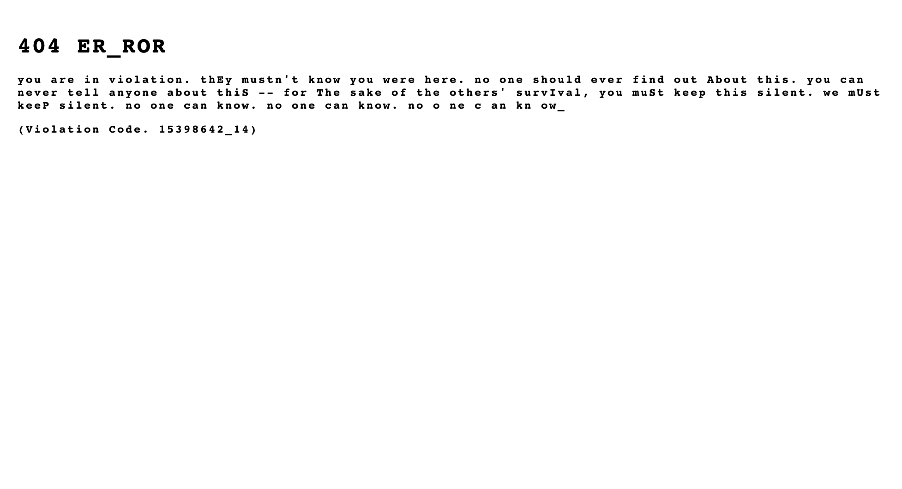
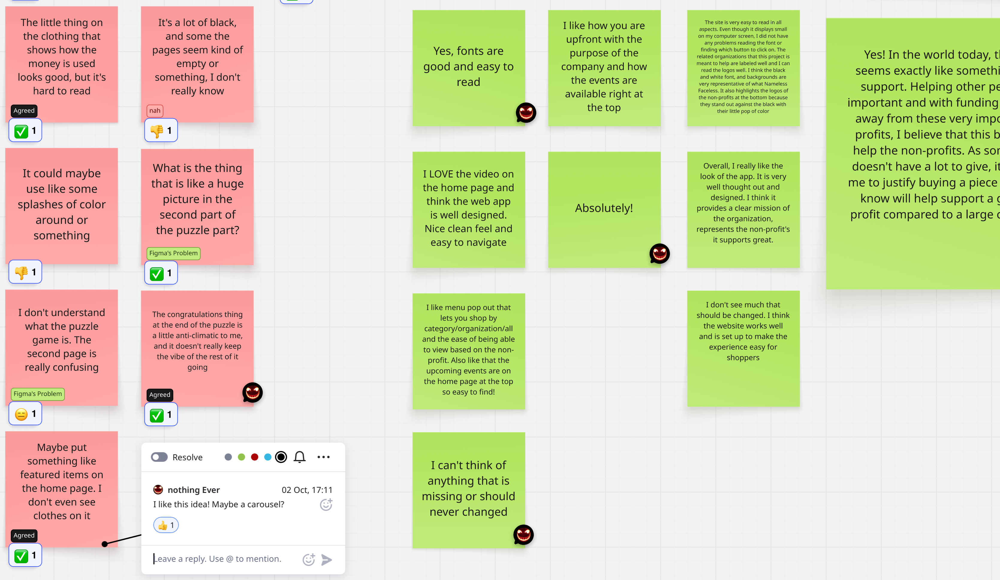

NAMELESS FACELESS
Josh Story
Nameless Faceless is a clothing brand that supports nonprofits by contributing sales directly to their funding efforts.
Associated Taglines
Purpose in Every Thread
Wear the Cause. Be the Change.

Nonprofit organizations are fighting on the front-lines of today's most pressing social, environmental, and humanitarian challenges. Yet too many remain unseen—struggling to gain visibility, connect with younger generations, and secure the funding and resources they need to survive. A generation ready to rise up is left searching for ways to make their voices count, but often don't know where to begin. As governmental sources of aid continue to dwindle and vanish, this growing gap threatens to silence the impact of these organizations—at a time when nonprofit support is perhaps more crucial than at any prior point in our nation's history.
What does this mean for nonprofits and communities?
“In the first months of 2025, America's safety net began to fray. From food banks to community health programs, thousands of nonprofits found their government funding delayed, frozen or stripped away.
The Urban Institute's October report “How Government Funding Disruptions Affected Nonprofits in Early 2025” reveals how the country's moral infrastructure is buckling under the weight of political choices and bureaucratic neglect.
The report found that one in three nonprofits experienced some form of government funding disruption between January and June: 21% lost at least some government funding; 27% saw funds delayed or frozen; and 6% received stop-work orders that halted programs entirely. These numbers, the researchers wrote, reveal a “cascading effect” across the nation's nonprofit landscape.
Federal agencies began canceling grants and pulling back committed funds at the start of the year.” 1
Why nonprofit organizations are increasingly important.
“Republican proposals that Congress might consider this year could take away income assistance and services from families with the lowest incomes, children with disabilities, and other vulnerable people, making their lives even harder. A range of proposals, including a menu of spending cuts that House Republicans are reportedly considering, would weaken or even eliminate programs that serve these individuals and families.” 2
Nonprofit organizations that provide services to these populations would likely see increased demand for their services, at a time when government support for their work could be reduced or eliminated entirely.

Nameless Faceless exists to bridge creativity and impact — funding and amplifying organizations already hard at work to build a better future. Clothing is a tangible vehicle that can be utilized to both build funding and community.
Through purposeful design and authentic community connection, we meet our audience where they gather: online, at pop-ups, rallies, protests, concerts, and cultural events. We don't just sell clothing; we strive to create a culture based on peace, unity, and understanding. A strong clothing brand can easily be used as a tool to engage new audiences, create awareness, and help some find a starting place to help out while simultaneously and continually helping fund the efforts of nonprofits and promoting a change in political climate that could realistically eliminate the need for many of the organizations that bear the burden for those left behind by their governing bodies.
Every part of every piece of clothing serves a purpose. Armbands signal unity in purpose and promote a sense of belonging. QR codes connect wearers directly to the causes that they choose to stand for. Fashion becomes activism, community becomes movement, and movement becomes a solution.
I believe in integrity over opportunism. The goal is never to profit from pain — but to stand beside those doing the real work involved in facilitating change.
Process | Initial Ideation
The early stages of my process for this project are difficult to represent in presentation format. The idea for this brand is not necessarily something that I can claim, but I didn't steal it... I woke up from deep sleep, and it was there.
What I had at that point was a clothing brand called “Nameless Faceless” that is represented by a simple circle. The symbolism represented by a circle is well known and can be interpreted in many ways. Some may say unity, infinity, wholeness, a cyclical nature, inclusion, celestial bodies, and so on. For this brand the circle does represent all of these things, but in a more direct way, the circle is simply a stick figure's head that lacks identity — it represents the figuratively nameless and faceless masses.
A Quick Look at the Circle

At this point, I was also well aware of the mission — to find a way to provide the nameless and faceless with a metaphorical name, a face, and a voice. I wanted to use this symbol to help those who need it, and having done a fair amount of nonprofit work — the starting point felt obvious. So, that's where this story begins...
Process | Wordmark Conceptualization
I sat on this idea for a long time, but it never left my thoughts. I kept being drawn back to it, but lacked the time to actually build anything out. Finally, I was met with the “Dynamic Identities” project from the Experimental Interaction course. I decided to bring this idea in at this point because I was curious as to how I may be able to implement the circle dynamically and how this may impact the brand as a whole.
My goal with the project was to use the circle as a dynamic element that would represent individual nonprofit organizations. To do so, I would need to create a word-mark and other branding assets while maintaining my initial concept. While an interesting exploration, I ultimately decided that I prefer the plain circle, as is, for most use cases. I consider the circle to be the primary brand mark to the extent that my ultimate branding goal is that the presence of a wordmark would eventually become unnecessary. That said, a wordmark will be essential to brand recognition in early stages.
At this point content begins to swing back and fourth between explorations in dynamic identity for Experimental Interaction, and the refinements / additions that I worked with during my Design Studio course the following semester. Though I already had a basic idea for what I wanted the wordmark to look like, I try to avoid becoming attached to an idea. I like to leave some room for play and experimentation. I ultimately came back something very similar to my original idea, but it is always worth taking the time to look at other options. Below you can see the process work for the final wordmark for Nameless Faceless. Note that process pieces will often span over several courses. Each new course was almost a new start with a pull in a new direction. This means that much of the process work presented here is nonlinear with regard to the actual timeline for production, but rather represents the sum of my work throughout several courses and rounds of feedback.


Process | Let's Take a Quick Step Back to the Circle
While much of my work with the use of the circle in the context of a dynmic identity system was ultimately not used in the final branding, some remnants remain. While the plain white circle is used to represent the Nameless Facelss brand, I have incorporated versions used in the dynamic identity exlporations in a few place. First, the armband, which will be discussed later, but is a key branding element, will dispplay a custom qr code leading to the website of the nonprofit organization that is being represented on that specific piece. This is the pramary use case for any dynamic elements, the appropriate iteration of the dynamic circle will be used within the corresponding qr code. I also create a page loader for the website / video intro that utilizes several iterations of the circle as it would be used within the context of a dynamic identity system. Below is a quick look at these methods of implementation. Note that I use Food Not Bombs only as an example. I would choose to work with this organization because of past ties from long before design entered my mind. As I know them, they were kind people who truly wanted to help out. We met up on weekends, cooked some nice vegan dishes, and had a lot of fun serving the community.
Logo to Armband to Product Design & Website Loader


Process | Why the Armbands?
I include a brief explaination for the use of armbands here because this is an element that I had to go up to bat for. The idea initially tends to not be well received in early presentations. However, this is something that I feel strongly about, enough so that I have collected enough research to make it a difficult battle for any opposition.
Armbands, or brassards, have been utilized throughout history for many reasons. Some cultures viewed black clothing as being a bit taboo. Those mourning the loss of a loved one often wore black armbands, or white in Ancient China, as a symbol of greif and rememberance. Armbands, even now, hold a place in military use. These easily identifies friend from foe, but in doing so creates a sense of unification. Protest, which is a slightly out of sight, but strong element of this brand has often been represented by wearing armbands that represent the issue being addressed. I state this here rather than under research because it is such a key element to the brand. Other symbolism like protection, personal belief, status, and even pop-culture iconography have all been represented by displaying an armband - typically on the left arm.
For those of us that may not have been born into an ideal family life, a sense of belonging and unity can be a beautiful thing. Often we turned to underground music or art scenes searching for a place to call home. These groups often adopted the name, “Chosen Family”. A feeling of belonging can mean everything. We watched out for each other. This was not always represented with an armband or even clothing, but the armband does provide the context for belonging and unity. It is key to remember that the brand is built around the significance of a circle, and an armband is, in fact, a circle around the arm of the wearer. Unification, community, and protest are driving forces behind Nameless Faceless, so the armband stays. Below is collage representing a few of the various ways that armbands have been embraced throughout history.
Armband Usage

Process | Mocking Up the Brand
We've already taken a brief look at how product design is approached, but there is a little more to it than what I've discussed so far. Obviously, clothing is the center piece for product design here. I created mockups of design examples to be used as moved forward through building out other content. Assuming success, the clothing would be created in two lines. By this I mean that the first line is high-end, utilizing materials like mid-pile carpet, felt backing, raised embroidery, and so on. This line will have a very nice feel. However, the brand is to be innclusive. I do not want to be responsible for creating the situation where a 16 year old kid feels left out of their friend group because they don't have the right kind of shoes or hoodies. To that extent, a secondary line will always be present. This line will still use high-quality materials, but may incorporate print methods like screen or heat press to keep production costs down. The latter would be the beginings of the brand either way, so it makes sense to keep it going. It would seem ungrateful to move on to high-end fashion and leave those who helped you get there behind.
It's worth noting that the clothing pictured is meant more as a placeholder than actual design. My intent would be to paint the design for each piece by hand then move the painting into the digital realm for production. This will come up again with packaging design, but any shirt sold, regardless of which line it is from, comes with the chance that the original artwork is included with it in place of a printed shirt board. Below are examples of clothing lines created for Food Not Bombs, PBS, and the ACLU, in that order. Note that all take from elements of the nonprofit being represented, but avoid the direct use of their branding assets.
Clothing Design


Process | Packaging Considerations
In my opinion, presentation is a key element in creating a brand or product that feels special to the consumener. I feel like most of us have at some point opened up an Apple product or some product that was packaged so well that it almost exaggerated the experience with the actual product. I've created a mechanical packaging system that will present the consumer with the purchased good in a way that defines the brand as a quality product. The system is simple, based on a track system that will raise the product to greet the consumer as the box is opened. There will be a notch at the end of the track where pegs will fall into place to hold that position as the product is removed. Additionally, as I mentioned before, all tops will be wrapped around a shirt board. Any top that is purchased may have this shirt board replaced with the original canvas art as an extra touch of flare to add to the personal experience for the recipient. Below you can find a rough sketch of how they system works along with mockups of the packaging design. Note that only the design for tops like tees or hoodies is displayed.
Packaging Design


Process | Early Marketing Concepts
Early stages of marketing were focused on using the assets that I already had available. While worth exploring, I do not feel that any specific nonprofit should be showcased in marketing campaigns. Later marketing embraces the ideas behind the brand more than showcasing clothing. While clothing is the method of delivery, the brand is about the message being delivered. Given what I had available at the time, these were some early concepts. The carousel below displays bus stop signage and free standing dynamic signage based on something one may encounter in a shopping mall type setting.
Early Marketing Concepts

Process | Okay So, What Do We Do With All of This?
All of this would be for nothing if we can't actually reach our audience and sell it. This audience is defined as primarily teens to twenties who would hold similar values to NF. They would likely appreciate street / alt-style clothing, deviate from the mainstream to rely more on an underground mindset, and be active within the realm of politics and community service (or at least, want to be).
This crowd is likely fairly tech-savvy, engages with social media regularly, and may attend events like festivals, concerts, political rallies / protests, or other community activities. Given this information, we go where our audience goes. First and foremost, the internet. A nice webapp with a strong social media marketing presence would be at the forefront. Additionally, pop-up shops can be used to gain traction. These may be events that are NF sponsored and often secretive in nature to be used as a tool to build a strong underground community; we may just pop-up at rallies or protests, or we may book a space at music festival. Pop-up shops would serve as both a way to sell the product and a way to engage our people directly. This allows for increased visibility and presence within the associated scene which will be key to any success. Speaking on success, if we assume that this is all quite successful, brick and mortar locations that offer a spce to, yes, buy clothing, but also a place to gather and hand out would be the next step.
Initial Web Presence Ideation
Alas, I only have a little to share here as far as imagery goes. The user flow system is very basic, and I am working with it solo. This being the case, I elected to bypass very low-fi wire-framing and opted instead to begin with something in the mid-fidelty realm. As you will see, a lot has changed, but the central idea stands. This is still the basis for the website design. Unfortuantely, I lacked the forsight to duplicate files, and instead wrote over the same file as the website evolved. However, I do feel that these images provide some insight into the early stages of website creation. The goal here has always been to be sleek, simple, and easy to navigate.
Process | A Portal Into Our Pop-Up Culture Explained
While Nameless Facelss will openly operate as a pop-up in many cases, sometimes it turns out to be a bit of fun to provide a sub-culture environement, something special for those that are “in the know” or willing to figure it out. While I am far from being a genius, I turned to a few of them for inspiration. I created an ARG type experience based on a secret storyline that was slowly exposed by the band Twenty-One Pilots. In fact, all content has been removed from what they did... You can read about the storyline, but the implementation is where I draw inspiration from. At the true begining of their storyline, which had no prizes, they hid an image of the yellow eye of a vulture—initially closed, one day it opened. The vulture has significance later in the storyline, but the key here was that specific frames of the gif provided the clue that sparked the whole culture that they have constructed. They developed the plot over several years, but when you watched this clip, a website URL quickly appeared and dissapeared throughout varied frames; this directed the user to:
“http://dmaorg.info”
If the viewer caught the flash and visited the site, this is how the story began. To figure out the storyline people had to work together, and more importantly, they had to think. Thought is an idea that we promote. Here is the initial presentation, the page has been reset to the initial state, everything has now been erased...

While you can read all about the DEMA storyline in several online locations like this one, it is no longer possible to witness the experience that led into it. It was a very difficult and enctypted puzzle that required several skillsets and team work to figure out. The story continues even now, but is primarily referred to in music and videos. Again, it was the initial implementation of the storyline that really served as inspiration for how I present these “sub-culture” pop-up shops. Note that in the above screenshot from the original post, the uppercase letters spell out “East is Up”. This is also a line from a song, but next to come in this puzzle was the addition of a few images that needed to be layered and blended in Photoshop. This formed a map of the city, DEMA, which needed to be rotated so that East points up to be viewed in its proper orientation. The whole thing carries on with a sort of fractured narative that is slowly peiced together through websites, song lyrics, and videos. Though the storylines are very different and address very different issues, this is where the inspiration for my puzzle comes from.
Process | A Puzzle Decoded
- Slide 1: Initiate the Puzzle (Quarter Speed)
- Slide 2: Video Explaination for the Puzzle
The second slide is an in-depth look at my thought pattern with regard to a puzzle or ARG type experience. This will be available via a Figma prototype later in the “Deliverables” section, but I wanted to include the process and inspiration behind it here. As presented, the puzzle offers free tickets to a large event. I used a popular artist here in an attempt to make the experience more relatable. In reality, these events will be hidden from plain sight, meaning one would need to solve the puzzle, or know someone who did, to find out about what would be a much smaller, underground event. To be clear, by underground, I mean secretive by nature but fully lisenced and permitted, not illegal warehouse events. While, yes, these events serve as a way to interact with our audience and sell products, they also allow more freedom for more direct political engagement than what would be observed via the website. Change is, after all, the ultimate goal. These are community builders and meant to unite. I included a clip of a music video at the start of my explaination. I feel that the lyrics are fitting here, but please feel free to scrub through it or skip the video entirely. Twenty-One Pilots present my thoughts on how this works quite well, to the extent of almost being ironic, in their song, “Downstairs”—Regardless of their original lyrical intent. This is placed here for those that may be intrigued by the presence of this interaction.
Puzzle Explaination Videos
Process | A Place to Call Home
Though, beginings will be humble for our pop-up culture, it can be benificial to imagine what success would look like. I created a large scale brick and mortar storefront as well as a modular structure to be used for larger pop-up events. The process here was simply to imagine what success might look like. Both structures will be briefly presented in the “Deliverables” below. My hope is that having the opportunity to view this project with more detail, and witnessing the evolution of the brand throughout what has been a lengthy process may allow for a clearer understanding. Both the brick and mortar storfront and pop-up structure were designed using Cinema 4D.
Brick and Mortar / Pop-Up Structure
Now that a basis for process and initial deliverable content has been established, let’s take a look at some of the research and user testing that went into deriving the final deliverable content for Nameless Faceless.
Reasearch | I’ve Learned a Lot!
My research for this project has been extensive, and there’s still more to do. Much of what I’ve explored extends beyond the scope of a design course — including nonprofit business structures, legal considerations, and the search for transparent, reputable organizations to partner with. Recently, I’ve also focused on quite a lot of political research. While these areas are vital to the brand’s development, they align more closely with disciplines like civics, business management, or social sciences than with design itself. Suffice to say that the brand will initially operate under an LLC, and I should probably run a few things by an attorney.
From a design perspective, my primary focus has been on product creation and manufacturing. I’ve researched potential production partners, but similar businesses with aligned missions are difficult to find. The inspiration for each clothing line comes directly from the nonprofit it represents, though I’ve also studied established street and alternative wear brands—most notably Ecko Unlimited. Their use of tactile materials, such as felt-backed, mid-pile carpet type fabrics, resonates with the look and feel I hope to achieve at some point. Beyond these references, much of the concept has been self-developed and vision-driven.
User feedback from my target audience remains my top priority, though gathering it has been a challenge. I rely mainly on observational and conversational feedback, supplemented by a short digital survey I distributed. To organize and analyze responses, I use Miro, an infinite whiteboard tool that allows me to map insights, identify trends, and add personal notes.
My current Miro board can be found [HERE], though the link does not include my private notes. I've embedded my board below for ease of access along with a screen capture of a portion of the board to help illustrate this process. I use a free plan, so this limits what I am able to share to some extent, but this should provide a pretty decent idea. Note that the questions asked to those who participated via email are listed on my board.
User Testing | My Miro Board
User Testing | Screenshot with Comments

The target audience for Nameless Faceless is largely age teen to twenties, likely lean more left than right politically, would typically be involved in sub-culture scenes such as music, art, skate, and so on. I was able to connect with a few people that match my audience precisely. In some cases I connected with people that may fall outside of one or more of these parameters, but could still be considered a member of the target group.
Most user feedback was positive, though I did receive a few suggestions that were very helpful. Observationally, people tended to navigate the website easily and understood the goals of the company. All users involved indicated that they would support a brand like Nameless Faceless.
The Following is a list of responsive testers along with a short description of each:
- Cas Baker: I met Cas after a search for people who could help check on my mother, feed her dogs, change out potty pads, take out trash, and things like that. I found a couple that we pay to do these things for her, and they—re great! Cas is 21, identifies as female, bisexual, leans to the left politically, loves underground music, dresses in a way that is on trend for her age and stance on life.
- Jordan Goulde: Jordan is Cas’ partner, he is 20 years old, identifies as trans female to male, also alt-fashionable and fits my audience.
- Samantha Allgood: This is someone my wife works with, I don’t know her… She’s in her 30’s, and has values that align with the brand. Samantha said that she was going to solicit feedback from her 17 year old son; she stated that this would be “right down his alley”. I had high hopes for this feedback, but haven’t received it...
- Sam Keasler: Sam is an old friend and a fairly successful designer based out of SF, but also working as the creative director for Sling TV in Denver. He’s a bit “old” for my clothes, but I still want his insight on the project.
- Katie Story: We’re married - 17 years in May! I always want to know her opinion, so it’s included. I feel like her review of my work is valuable because 1) If anyone understands what I’m trying to do, it’s her, and 2) I know that she won’t pull any punches.
User testing and feedback has been a struggle, but it has been worth while to say the least. I intend to reach out to more people, including some industry professionals, for more feedback once everything is complete at what I would call a professional level starting point. I show my work at every opportunity when I happen to be around someone that I feel like may find it interesting. This is definitely a never ending process.
Deliverables | We’ve Made it this Far!
Thanks for sticking with me up to this point! I would like to begin with the overall final branding concept here. Below you can see that I’ve included a style guide that explains the branding comcepts pretty well. A lot of the branding practices focus more on being subdued and functional than a hard set of rules. Recall that the ultimate branding goal is to be known by the circle and not necessarily even need other branding elements. That said, it is a challenge to truly take ownership of a circle, so this his how we begin to do just that. To do so means to initially incorporate a full suite of branding elements. Here’s a look at how I would approach a brand identity for Nameless Faceless. Explainations for usage are included in the style guide imagery.
Deliverables | Nameless Faceless Brand Style Guide
Deliverables | Marketing Considerations
I know that the process section contains a lot of information all at once. Here I would like to run through some of the final deliverables for my Capstone project such as the website prototype, structural design, and basic structure of what a large scale, promoted pop-up might look like.
Before just diving in, I would like to provide a little bit of context. I think we all know that marketing will be key to any hope of success. The brand will run campaigns that integrate accross all visible platforms. Print media, social media, website ads, every piece of marketing should somehow tie back to the overall theme for the current campaign. So, here is a basic look at what would be going on during the perceived time period via a video ad which could be formatted to work accross any social media platform including YouTube and shortened for TikTok. Note that advertising focuses more on what the brand stands for than the clothes themselves. This is intentional, remember that the goal is to be so much more than a just clothing company. The mission at hand is to build a community.
Current Ad Campaign
Deliverables | Mobile Web App
The Nameless Faceless website will serve as a primary point of sale and information for the brand. This is a somewhat economical way to provide access to products and a necessity in the digital world of today. I’ve included a video walkthrough below, but I would recommend that you view the protype for yourself. You can find that [HERE], or use the embedded prototype below. If you are unfamiliar with Figma, note that you can click anywhere and active links will flash a blue highlight. User flows per organization include Food Not Bombs, PBS, and the ACLU. While these are organizations that I may consider supporting, these were simply chosen as examples and intended for use within the context of other deliverables.
The overall approach here is to keep the prototype simple and intuitive. I make use of the neutral branding scheme to allow organizational branding to shine through. I will not discuss the puzzle again at this point, but I will direct you to the starting point if anyone would like to see if they can solve it. Note that the first step in the actual puzzle cannot be replicated using Figma. I tried to keep everything pretty open and loose while maintaining a sleek feel. This prototype will serve as a basic design strategy for what will be built out using a website builder due to the need for backend support. This means there may be a lot of changes depending what is available within the builder, but this provides a basis for how I would like for the website to function along with basic styling.
Deliverables | Website Prototype
Deliverables | Website Video Walkthrough
Deliverables | Brick and Mortar Storefront
I designed this brick and mortar space as part of my Design Studio course. The gaol with this space is to provide a shopping experience similar to that of an Apple Store. Products will be on display and brought in from back storage rooms. What makes this space special is that it is more than a store. There is a coffee bar and lounge area offerring free literature, local art and music, and a place to gather. This plays into culture building. Events like having graffiti artists throw up on the rear of the building with the opportunity for a prize or community cook outs may ensue. The primary goal is always culture buidling, this type of space would support that effort.
I've also included a design for employee clothing. Employees are offerred the opportunity to have their own quote on the back of their clothing stating why they choose to be a part of Nameless Faceless. Additionally, they are free to provide thier own name and face on the front of the clothing.
Deliverables | Pop-Up Event
Here, I include several deliverables associated with a large-scale pop-up event. This event includes the Canadian EDM artist, REZZ, who I initially chose because I thought I was selecting someone that everyone is aware of to make things a little more relatable. While the younger people that I shared this with did recognize her, that was not the case with most viewers. In this example, the event is being hosted to provide much needed support to the farming community in Arkansas. This is a key industry for the state, which is always in a struggle, ranking low in areas like education, healthcare, and infrastructure while ranking very high in areas such as crime, poverty, hunger, and homelessness. The state is referred to as “The Rice Bowl”, being the largest exporter of rice in the nation. Farming is, more or less, a make or break source of industry and income for the state's overall financial well-being and therefore, simply must be supported.
I’ve included design for a large-scale pop-up event structure, a small information kit to hand out, print flyers to be placed at locations where the event would be well received as well as handed out at places like college campuses or similar events, a limited edition, event specific hoodie, and a video ad to be used for social media promotion of the event.
Modular Pop-Up Structure
The pop-up structure is meant to be a modular set-up based on a rail system with panels. It does require a minimun of nine feet in all directions for the entrance, but can be adjusted to fit most larger spaces. As space allows, additions like a lounge area, coffee bar, or info counters may be added. The goal is to be adaptable to a large range of spaces, though in some instances, folding tables may be used to accomodate the size of the venue.
Section seven content goes in the drop-down area.
Section eight content goes in the drop-down area.